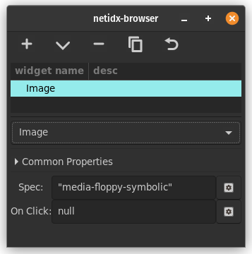

Image

The image widget allows displaying an image in the browser. The image has two bscript properties.
spec
(<icon-name> | icon-spec | <image-bytes> | image-spec)
icon-spec: [<icon-name>, icon-size]
icon-size: ("menu" | "small-toolbar" | "large-toolbar" | "dnd" | "dialog")
image-spec: [
["image", <image-bytes>],
required, the image bytes.
["width", <desired-width>],
optional, if specified the image will be scaled to the
specified width. If keep-aspect is true then the height
will also be scaled to keep the image's aspect ratio even
if height is not specified.
["height", <desired-height>],
optional, if specifed the image will be scaled to the
specified height. If keep-aspect is true then the width
will also be scaled to keep the image's aspect ratio even
if width is not specified.
["keep-aspect", (true | false)]
optional, keep the aspect ratio of the image.
]
<icon-name>: A string naming the stock icon from the current theme that should be displayed. The default size is "small-toolbar".icon-spec: A pair specifying the icon name and the icon size.icon-size: The size of the icon<image-bytes>: A bytes value containing the image in any format supported by gdk_pixbuf.image-spec: an alist containing the image bytes in any format supported by gdk_pixbuf and some metadata.
Examples,
"media-floppy-symbolic"
Display the icon from the standard icon set.
<binary-png-data>
Display the png data, literally the raw bytes copied into netidx directly from the file.
On Click
This event handler is triggered when the user clicks on the
image. event() will yield null when that happens.
